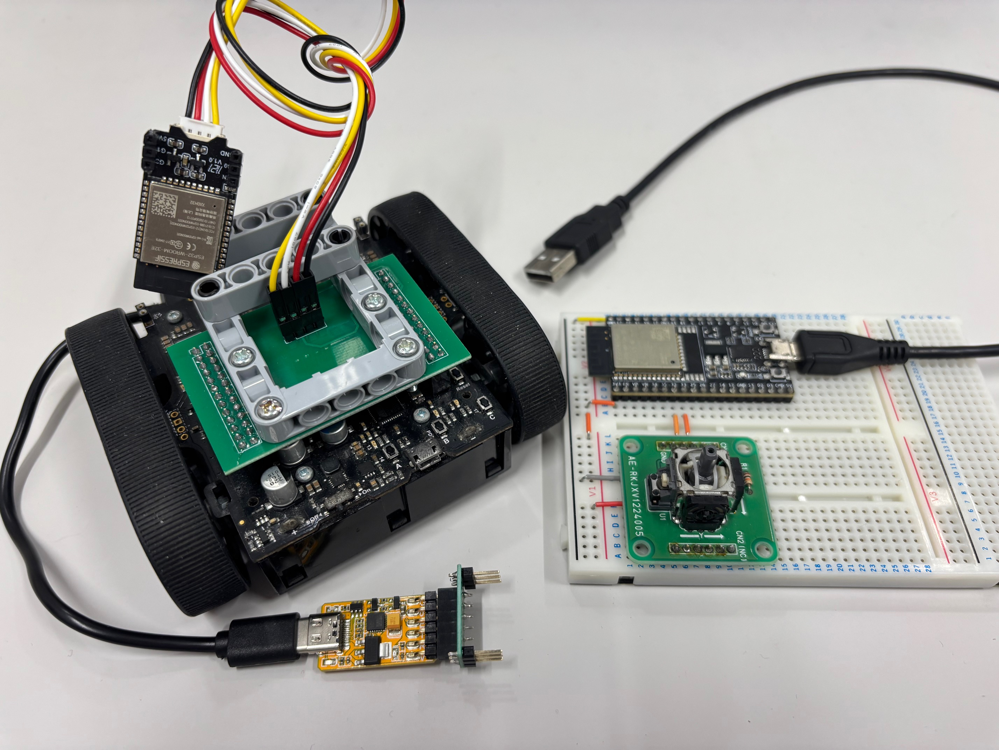

現在 PixyPet の先導車用に， ラジコンZumoを XBee, VS-C1, BLEserial3 の3台（赤外線はXBeeにアップデート）で運用していますが， 赤青のボール2台ずつ先導させるにはもう1台ほしいところ． TimerCAM を使ったマリオカートライブもどきの 試作4号機 を出せば4台運用可能ですが， こいつは PixyPet の翌週に登場させる機体なので，ネタバレになっちゃう～ ということで，4台目として ESP-Now を使った無線コントロールを考えてみました．
使用する ESP32 は，マリオカートライブもどきの 試作1号機 で使用した ESP32開発キットと， 試作2号機 でカメラだけ壊れた UNIT-CAM を使いました．使わなくなった資材の有効活用ですね！ UNIT-CAM は GROVE 端子を持っているので，Zumoとの接続は試作後の量産基板（参考画像は こちら のあとがき参照）が流用できます． 必然的に後者が受信側となり，前者をコントローラ側にしました．

試作4号機 （本番）で使っている Dabble アプリをうまくエミュレートできれば
Zumo 側のプログラムをそのまま流用できるはず！というコンセプトで書きました．
注意点として，プログラム内で MAC アドレスを決め打ちして接続しに行く都合上，受信側ESP32の MAC アドレスを事前に調べておいてください．
同じ Gitリポジトリ内 の M5mario_OV3660_iPad.ino となるべく同じデータを送るようにしています．
こんな小さなマイコンで三角関数が使えるんですね．すごい時代だｗｗ
こちらは ESP-Now で受信したバイトデータをそのまま I2C に垂れ流すだけのプログラムです． 送信側同様に M5mario_OV3660_iPad.ino と同じです．
ESP-Now ではじめて通信させましたが良好でした．簡単ですね～ 動作動画は省略します．
唯一の難点として，このコードは esp32 ライブラリのバージョン 3.3.3 で書いたので，
試作4号機 の M5mario_OV3660_iPad.ino とは違う環境でコンパイルする必要があります．
2.x 系に合わせて書こうかと悩みましたがいまさら古いコードで書くのもどうかと思い，執筆時点での 3.x 系をベースにコードを書きました．
ワタシのところでは，デスクトップPCを 2.0.3 に，サブノートを 3.3.3 にして，それぞれで書き込んでいます．
デモ機用に保管しておけばそうそう書き直すこともないので．